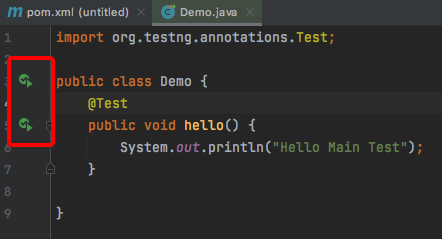
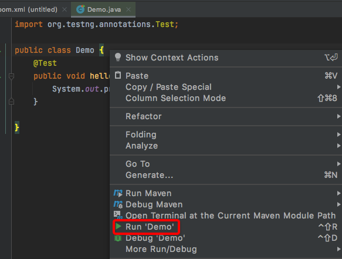

2 如何运行TestNG¶

大家好，我是刚哥。
本文将介绍两种运行TestNG的方式：
IDEA
命令行
IDEA¶
IDEA配置TestNG可以参考我之前的这篇文章《2021年搭建Java环境最快办法》–添加TestNG。
在IDEA中运行TestNG第①种点击方法或类前面的小箭头：

第②在方法或类内部点击右键：


第③种方式是使用testng.xml，IDEA可以右键testng.xml来运行，在文件名和文件内部点击均可：

testng.xml支持很多种配置，比如配置测试类：
<!DOCTYPE suite SYSTEM "https://testng.org/testng-1.0.dtd" >
<suite name="Suite1" verbose="1" >
<test name="Nopackage" >
<classes>
<class name="NoPackageTest" />
</classes>
</test>
<test name="Regression1">
<classes>
<class name="test.sample.ParameterSample"/>
<class name="test.sample.ParameterTest"/>
</classes>
</test>
</suite>
配置测试包：
<!DOCTYPE suite SYSTEM "https://testng.org/testng-1.0.dtd" >
<suite name="Suite1" verbose="1" >
<test name="Regression1" >
<packages>
<package name="test.sample" />
</packages>
</test>
</suite>
配置组和方法：
<!DOCTYPE suite SYSTEM "https://testng.org/testng-1.0.dtd" >
<suite name="Suite1" verbose="1" >
<test name="Regression1">
<groups>
<run>
<exclude name="brokenTests" />
<include name="checkinTests" />
</run>
</groups>
<classes>
<class name="test.IndividualMethodsTest">
<methods>
<include name="testMethod" />
</methods>
</class>
</classes>
</test>
</suite>
默认TestNG会按xml顺序执行，可以设置
preserve-order为false变成随机顺序：
<!DOCTYPE suite SYSTEM "https://testng.org/testng-1.0.dtd" >
<suite name="Suite1" verbose="1" >
<test name="Regression1" preserve-order="false">
<classes>
<class name="test.Test1">
<methods>
<include name="m1" />
<include name="m2" />
</methods>
</class>
<class name="test.Test2" />
</classes>
</test>
</suite>
命令行¶
使用以下命令执行TestNG：
java org.testng.TestNG testng1.xml [testng2.xml testng3.xml ...]
这在持续集成中很有用。但这是官方给的命令，实际调用是调不通的，可以借助Maven来实现。
先在pom.xml添加：
<build>
<plugins>
<plugin>
<groupId>org.apache.maven.plugins</groupId>
<artifactId>maven-surefire-plugin</artifactId>
<version>2.19.1</version>
<configuration>
<suiteXmlFiles>
<suiteXmlFile>testng.xml</suiteXmlFile>
</suiteXmlFiles>
</configuration>
</plugin>
</plugins>
</build>
然后执行mvn clean test命令就行啦。